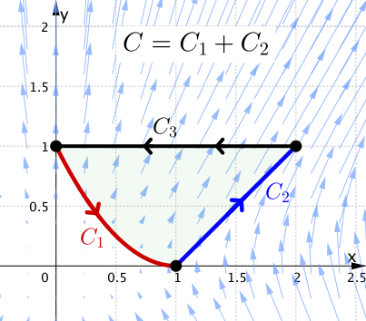
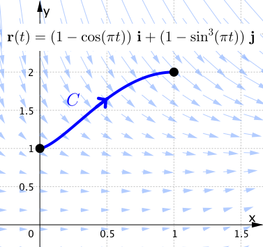
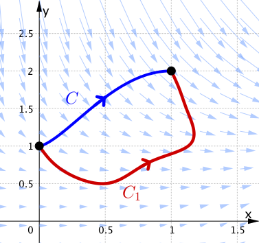
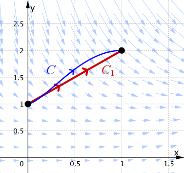

Calculus &
Linear Algebra II
Chapter 36
36 Green's theorem and a test for conservative fields
By the end of this section, you should be able to answer the following questions:
- What is Green's theorem and under what conditions can it be applied?
- How do you apply Green's theorem?
- Given a vector field in two dimensions, how can we test whether or not it is conservative?
36.1 The story so far
The following diagram summarises the relationships between conservative vector fields, path independent line integrals and closed line integrals we have seen so far.
36.2 Clairaut's theorem and consequences
Suppose a function of two variables $f$ is defined on a disc $D$ that contains the point $(a,b)$. If the functions $$\displaystyle \frac{\partial^2 f}{\partial x\partial y}\;\; \text{ and }\;\; \displaystyle \frac{\partial^2 f}{\partial y\partial x}$$ are both continuous on $D$, then \[ \frac{\partial^2 f}{\partial x\partial y}(a,b) = \frac{\partial^2 f}{\partial y\partial x}(a,b). \]
36.2 Clairaut's theorem and consequences
Say we have a conservative vector field $\F = F_1~\i+F_2~\j$. This means that there exists an $f(x,y)$ such that \[ F_1 = \frac{\partial f}{\partial x}, \quad F_2 = \frac{\partial f}{\partial y}. \]
An immediate consequence of Clairaut's theorem is that \[ \frac{\partial F_1}{\partial y} = \frac{\partial^2 f}{\partial x\partial y} = \frac{\partial^2 f}{\partial y\partial x} = \frac{\partial F_2}{\partial x}. \]
36.2 Clairaut's theorem and consequences
In other words, we have the following:
If $\F = F_1~\i + F_2~\j$ is a conservative vector field, then \[ \frac{\partial F_1}{\partial y} = \frac{\partial F_2}{\partial x}. \]
36.2 Clairaut's theorem and consequences
Let's add this to our diagram:
If we can reverse the new arrow, then we would have the criterion that we need!
36.2 Clairaut's theorem and consequences
|
That is, the condition \[ \frac{\partial F_1}{\partial y} = \frac{ \partial F_2}{\partial x} \] would be a test for a conservative vector field. To do this, we require one more piece of the puzzle. That is Green's theorem. |
36.3 Green's theorem
Let $D$ be a region in the $xy$-plane bounded by a piecewise-smooth, simple closed curve $C,$ which is traversed with $D$ always on the left. Let $F_1(x,y),$ $F_2(x,y),$ $\displaystyle \frac{\partial F_1}{\partial y}$ and $\displaystyle \frac{\partial F_2}{\partial x}$ be continuous in $D$. Then
\[ \iint_D\left( \frac{\partial F_2}{\partial x} - \frac{\partial F_1}{\partial y}\right) ~dx~dy = \oint_C\left(F_1 dx + F_2 dy\right) \]
36.3 Green's theorem
\[ \iint_D\left( \frac{\partial F_2}{\partial x} - \frac{\partial F_1}{\partial y}\right) ~dx~dy = \oint_C\left(F_1 dx + F_2 dy\right) \]
This theorem relates a double integral to a line integral over a closed curve. For example, we can use Green's theorem to evaluate complicated line integrals by treating them as double integrals, or vice versa.
36.3 Green's theorem
Regarding our discussion on conservative vector fields, we have the following corollary to Green's theorem: \[ \text{If } \;\frac{\partial F_1}{\partial y}= \frac{\partial F_2}{\partial x}, \;\text{ then } \;\oint_C \F \pd d\r = 0. \]
Note that $\F = F_1~ \i + F_2 ~\j$.
36.3 Green's theorem
If we add this to our diagram, we can now link any four statements via the arrows.
In other words all four statements are equivalent.
36.3 Green's theorem
|
In particular, we now have a test to determine whether or not a given two dimensional vector field is conservative:
The vector fied $\F$ is conservative |
36.3.1 Find the work done by the force $\F = x^2y~\i+xy^2~\j$ anticlockwise around the circle with centre at the origin and radius $a$.
36.3.1 Find the work done by the force $\F = x^2y~\i+xy^2~\j$ anticlockwise around the circle with centre at the origin and radius $a$.
|
Let's use Green's theorem: \[ \oint_C\F \pd d\r = \iint_D\left( \frac{\partial F_2}{\partial x} - \frac{\partial F_1}{\partial y}\right) ~dx~dy \] \[ \quad \;\;=\iint_D\left( y^2- x^2\right) ~dx~dy \] Here we can use polar coordinates: $x= r \cos \theta$, $y = \sin \theta$. So we have \[ D = \left\{ (r, \theta) ~|~ 0\leq r\leq a, 0 \leq \theta \leq 2 \pi \right \} \] and $y^2-x^2 = r^2\left(\sin^2\theta -\cos^2\theta \right)= - r^2 \cos \left(2\theta\right)$. |
36.3.1 Find the work done by the force $\F = x^2y~\i+xy^2~\j$ anticlockwise around the circle with centre at the origin and radius $a$.
|
Then
Notice that $\F$ is not conservative! |
Green's Theorem 🤔
\[ \oint_C\big(F_1 dx + F_2 dy\big) =\iint_D\left( \frac{\partial F_2}{\partial x} - \frac{\partial F_1}{\partial y}\right) ~dx~dy \]
Green's Theorem 😃


Green's Theorem 🤯
36.3.2 Evaluate the line integral $\displaystyle \int_C 2xy ~dx + \left(x^2+3y^2\right)dy$
where $C$ is the
path from $(0,1)$ to $(1,0)$ along $y = (x-1)^2$
and then from
$(1,0)$ to $(2, 1)$ along $y = x - 1$.
36.3.2 Evaluate the line integral $\displaystyle \int_C 2xy ~dx + \left(x^2+3y^2\right)dy$
|

|
Can we use Green's theorem here? Yes, but we need a closed curve. For example consider $C_3$ the segment from $(2,1)$ to $(0,1)$. |
36.3.2 Evaluate the line integral $\displaystyle \int_C 2xy ~dx + \left(x^2+3y^2\right)dy$
|
|
Then by Green's theorem we have
\[ \text{Thus }\;\;\int_C \F \pd d\r = -\int_{C_3}\F \pd d\r. \] |
36.3.2 Evaluate the line integral $\displaystyle \int_C 2xy ~dx + \left(x^2+3y^2\right)dy$
|
|
\[ \int_{C_3}\F \pd d\r = \;? \] On $C_3$ we have that $y=1$ and $x$ varies. A parametrisation of $C_3$ is: \[ \r(t) = 2(1-t)~\i+\j,\quad t\in[0,1]. \] Then $ \F\left(\r(t)\right) = 4(1-t)~\i + \left(4\left(1-t\right)^2+3 \right)\j,\, $ $\,d\r = (-2~\i)~dt.$ |
36.3.2 Evaluate the line integral $\displaystyle \int_C 2xy ~dx + \left(x^2+3y^2\right)dy$
|
|
$ \F\left(\r(t)\right) = 4(1-t)~\i + \left(4\left(1-t\right)^2+3 \right)\j,\, $ $\,d\r = (-2~\i)~dt.$ So
$\text{Hence }\;\;\displaystyle \int_C \F \pd d\r = -\int_{C_3}\F \pd d\r $ $=4$. |
36.3.3 Evaluate $\displaystyle \int_C \left(3+2xy\right) dx + \left(x^2-3y^2\right)dy$ where $C$ is
the curve given by $\r(t) = \big(1-\cos(\pi t)\big)\i + \left(1+\sin^3(\pi t)\right)\j$ for $0\leq t\leq 1/2$.
36.3.3 Evaluate $\displaystyle \int_C \left(3+2xy\right) dx + \left(x^2-3y^2\right)dy$ where $C$ is
|


|
Direct computation using $ \r(t) $ is complicated. But notice that \[ \frac{\partial F_1 }{\partial y} = 2x =\frac{\partial F_2 }{\partial x} \] This implies that $\F$ is conservative. In other words, $\displaystyle \int_C \F \pd d\r\;$ is path independent. $\displaystyle \int_C \F \pd d\r = \int_{C_1} \F \pd d\r $ |
36.3.3 Evaluate $\displaystyle \int_C \left(3+2xy\right) dx + \left(x^2-3y^2\right)dy$ where $C$ is
|  |
Let's use a simpler path: \[ C_1:= \r(t) = t~\i + (t+1)~\j \] with $0\leq t\leq 1.$ Then
You should check this! 📝 |
36.3.3 Evaluate $\displaystyle \int_C \left(3+2xy\right) dx + \left(x^2-3y^2\right)dy$ where $C$ is
|
|
We can also use the Fundamental Theorem for Line Integrals. Note that $\F= \nabla f,$ where \[ f = 3x+x^2y-y^3 + \text{constant}. \] Then
|